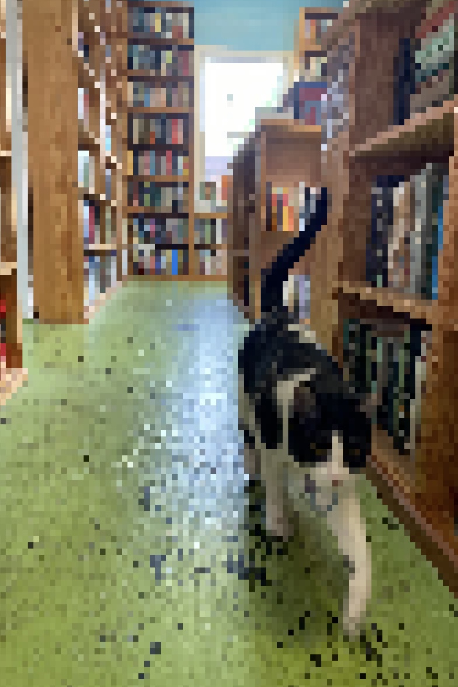

This page is for documenting my current work on a short project about image-processing in JavaScript largely inspired by Electric Zine Maker created by alienmelon

| 1.0.0 |
1st release! Here are the current features: Pixelate, Monochrome, Bayer, Halftone (bad), Blend Options: Add, Multiply, Screen, Subtract, Overlay, Lighten, Darken. |
|  |
photos - 1 click(s)
buttons - 2 click(s)